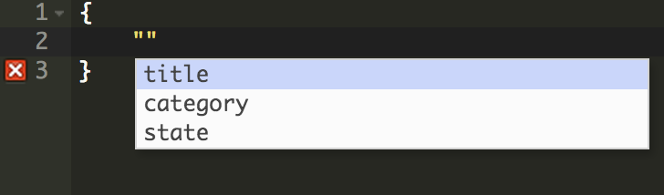
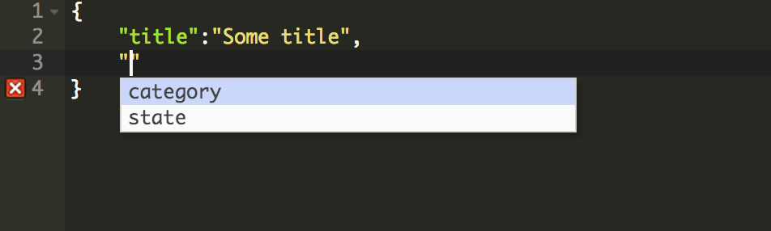
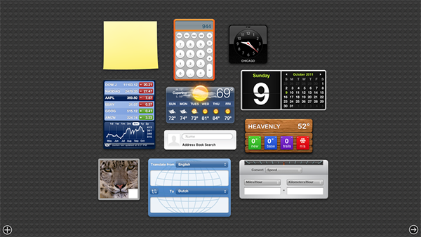

Hammock
A novel approach to web programming
Why should I care?
100% Javascript
Declarative Meta-programming
Strong typing, smart editor
Basics
Classes in hammock are different than in most programming languages. A class is simply a JSON document that has a schema (a "fields" property).
A class is always an instance of another class. The root class, which defines the basic types and structure of a class schema, is an instance of itself.
{
"fields": {
"name": { "type": "string", "required": true },
"fields": { "type": "object", "required": true, "value_fields": {
"type": { "type": "select", "required": true,
"options": ["string", "select", "boolean", "object", "array",
"number", "function", "markup", "date"] },
"required": { "type": "boolean" /* default: false */ },
"options": { "type": "array" },
"fields": { "type": "object" },
"value_fields": { "type": "object" },
"ref": { "type": "select", "ref": "class" },
"ref_field": { "type": "string" /* default: "name" */ }
}
}
}
}
Classes are very flexible
- They can model persistent application data (e.g. post class for a blog)
- They can model UI components (e.g. React component, a button class)
- Or they can be building blocks for a program, (e.g. a "module" class)
{
"name": "react-meta-class",
"fields": {
"render": { "type": "function", "required": true },
"getInitialState": { "type": "function" },
"componentDidMount": { "type": "function" }
}
}
So if we define a class, with the following schema...
{
name: "post-class",
fields: {
title: { type: "string", required: true },
category: { type: "select", options: ["main", "business", "tech"] },
state: { type: "select", options: ["draft", "published", "archived"],
default: "draft" }
}
}
The editor offers auto-complete support:
Just keep pressing Tab, autocomplete helps you fill in the document. Easy!

Web Shell
We have lots of amazing development tools nowadays:
... but none that matches the elegance and simplicity of the unix shell
Modules
Similar to other languages, modules can be used to:
- Reuse and share code across projects
- A module can be compiled and deployed as a web app
- ... or it can act as a plugin by implementing a certain interface
Hammock.createModule({
name: "hello-world",
title: "Hello World!",
world: "earth",
render: function () {
return Hello {this.world}!;
}
});
A more complex example:
(this part is under construction)
Plugins & App Templates
A plugin is a module that plugs in to an "App Template" and provides some specific functionality.
Many different App Templates could be developed, and we're looking to provide a few out of the box.
The Dashboard App Template is an app which can host a bunch of widgets, kind of like this:

THE END
contact: vonwao@gmail.com (Otto)
We don't have a mailing list yet, but you could follow us
on Facebook